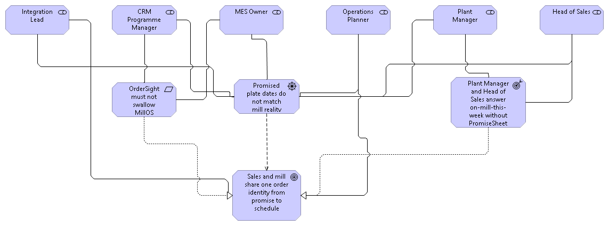
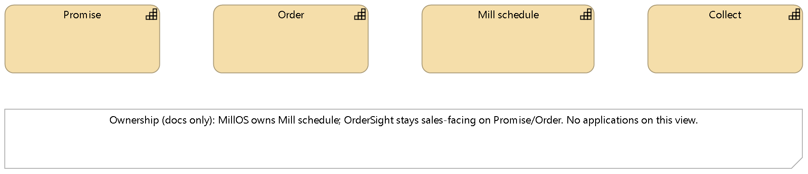
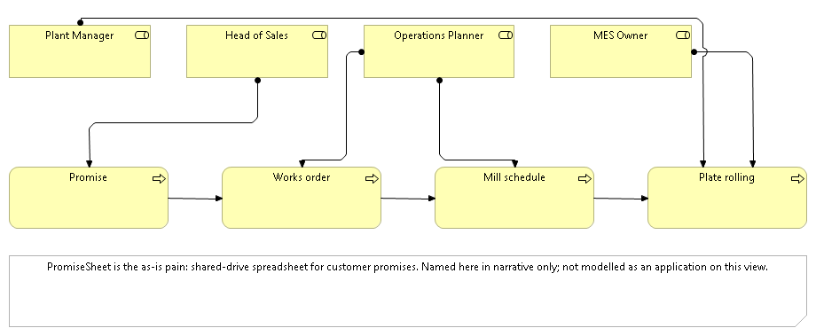
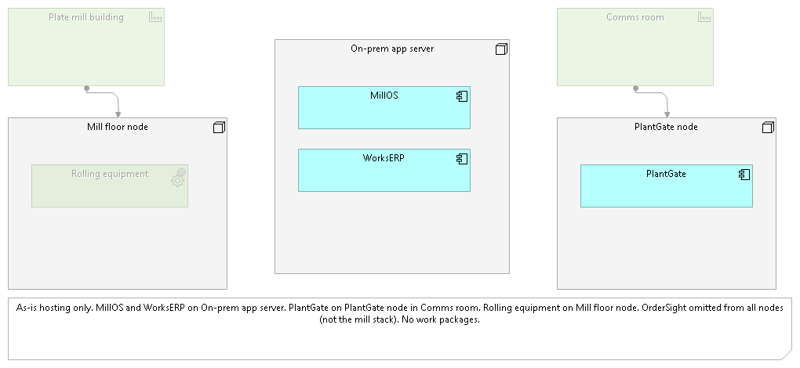
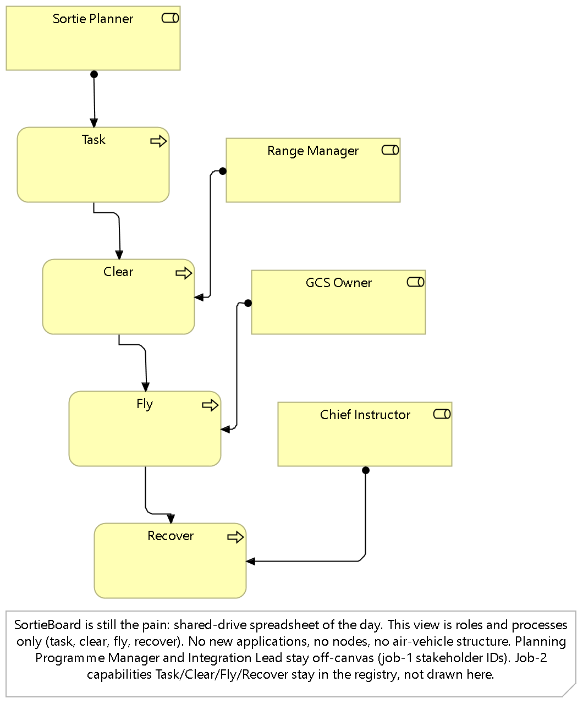

Examples
Hatherley Plate Ltd, a UK plate mill. Hawker Range Systems Ltd, a training UAS range. Same method, different nouns.
Worked examples for jgs-archi-skills. Two fictional SOAM runs live in Archi: a UK plate mill, and a training UAS range. Open the mill model. Archi stays the system of record.
These are author-run frozen briefs, not client engagements. No speedup claim.
Each example is a real .archimate file you open in Archi 5.7+. No agent is needed to look: the five named views per example are saved in the model. If you want to go further, you can replay a job from a paste fence and stop at the View Plan gate, where nothing mutates until you approve.
Hatherley Plate Ltd, a UK plate mill. Hawker Range Systems Ltd, a training UAS range. Same method, different nouns.
Motivation, capability, operations, application support, technology and physical. One freeze per model.
Each run was driven by five sequenced pastes. Specialists stay orchestrator-dispatched. Nothing writes before the plan is approved.
The freeze: OrderSight must not swallow MillOS, rolling equipment sits on the mill-floor node, and there are no work packages on the as-is picture. The exports below come straight from the run in this repository; captions are not a substitute for opening Archi.
| View | What to look at |
|---|---|
Motivation Overview | OrderSight must not swallow MillOS. |
Capability Map | Promise, Order, Mill schedule, Collect. |
Production Operations | Shop-floor chain. No applications on this view. |
Application Support | MillOS, WorksERP, PromiseSheet, OrderSight, PlantGate stay distinct. |
Technology and Physical | Rolling equipment assigned to the mill-floor node. |





Hawker Range Systems Ltd runs a training UAS range. The model keeps the SysML boundary where it belongs: the air vehicle stays off this canvas, and the planning tool is not modelled as the range's product structure. Open models/moorfield-range.archimate in Archi to walk its five views.

Looking at a finished model needs one tool: Archi 5.7+. Replaying a job needs the JGS Archi Bridge and the skill pack as well.
# Look at the models: clone and open git clone https://github.com/jgsystemsconsulting/jgs-archi-skills-we cd jgs-archi-skills-we # then open models/hatherley-plate.archimate in Archi 5.7+
| You want to | You need |
|---|---|
| Open the five views | Archi 5.7+. Open the working .archimate, not the .seed copy. |
| Replay a gated job | The JGS Archi Bridge and the skill pack, installed and running. |
| Run the release gate | Python 3.10+ (standard library only): python scripts/check_release.py. |
Replay drives the same gated flow the saved runs used. Full operator notes: docs/how-to-run.md.
Open the named .archimate for the example you mean. Confirm the Bridge get-model-info name matches before anything else.
Even an empty view. Without one, the Bridge returns MUTATION_FAILED on the UI thread. If it still appears: stop the MCP server, start it again.
Copy a fenced block from prompts/ (mill) or prompts/moorfield/ (range) into an agent that has the skill pack. One job at a time.
Approve, revise, or abort. Nothing is written until you say yes. A refused plan stays on that job; do not paste job N+1 until job N passed.
After a passed job: File, Save in Archi, then commit the working .archimate. The Bridge has no save tool; closing without Save loses the run. If the agent invents WMS, TMS, a data lake, an ERP replacement, work packages, or an air-vehicle product structure: refuse it, log the row in defects/log.md, and re-paste the same job.